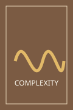
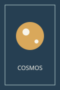
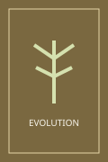

생명과학
신간
생명이란 무엇인가
출판사: Syntropy Books 큐레이션
물리학의 언어로 생명과 질서의 근원을 탐구하며, 살아 있는 세계를 새롭게 바라보게 하는 고전입니다.
SYNTROPY BOOKS
출판사: Syntropy Books 큐레이션
물리학의 언어로 생명과 질서의 근원을 탐구하며, 살아 있는 세계를 새롭게 바라보게 하는 고전입니다.
출판사: Syntropy Books 큐레이션
생태계와 사회를 서로 연결된 네트워크로 읽으며, 관계 속에서 생겨나는 질서와 생명력을 설명합니다.
옮긴이: 박배식
출판사: 승산
작은 변화가 거대한 패턴을 만드는 과정을 따라가며, 혼돈 속에 숨어 있는 새로운 질서를 보여줍니다.

옮긴이: 홍승수
출판사: 사이언스북스
우주의 시간과 생명의 진화를 연결해 바라보며, 지식이 세계를 이해하는 질서가 되는 순간을 담았습니다.

옮긴이: 홍영남, 이상임
출판사: 을유문화사
생명체의 행동과 진화를 유전자 관점에서 살피며, 생명 시스템이 유지되는 방식을 질문합니다.

출판사: Syntropy Books 큐레이션
에너지의 흐름과 문명의 방향을 돌아보며, 지속 가능한 질서를 만들기 위한 전환을 생각하게 합니다.
옮긴이: 김태언
출판사: 중앙북스
지역 공동체의 삶을 통해 성장과 속도 중심의 문명을 성찰하고, 조화로운 미래의 단서를 찾습니다.
옮긴이: 김학주
출판사: 을유문화사
고정된 질서에서 벗어나 변화와 관계의 흐름을 바라보며, 세계와 함께 살아가는 감각을 일깨웁니다.
출판사: Syntropy Books 큐레이션
카테고리 지정이 완료되지 않은 도서를 임시로 모아 보여줍니다.